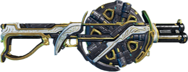
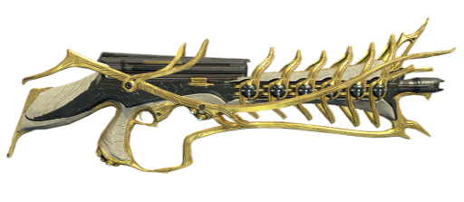
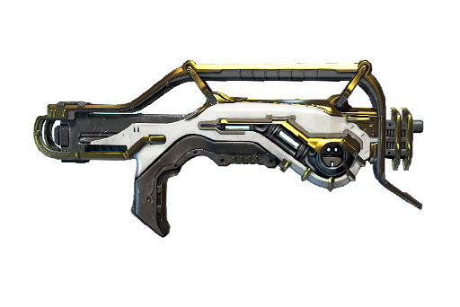
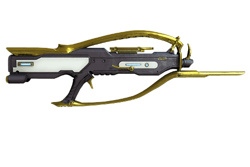
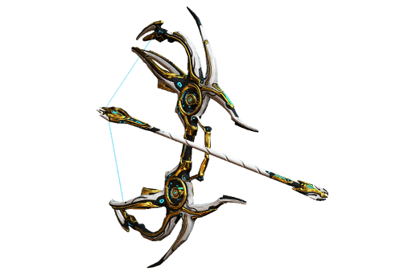
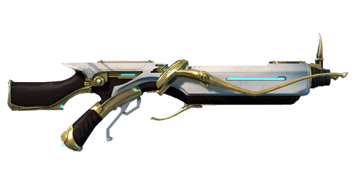
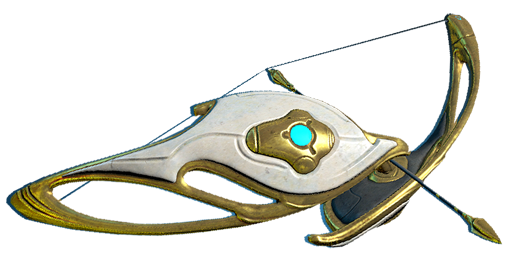
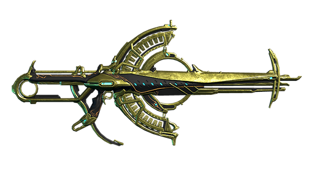
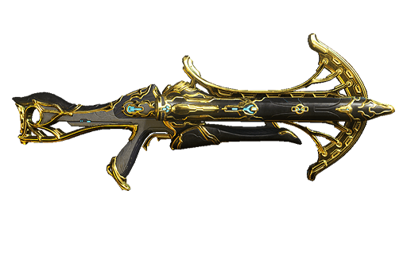
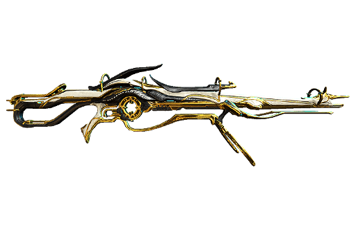

| Boar Prime |
| Tip: | Šibrovka |
| Streljanje: | Avtomatsko |
| Hitrost: | 4.67 metkov/sekundo |
| Kapaciteta: | 20/120 |
| Ponovno polnenje: | 2.8 sekund |
| Škoda: | 184 (20.4*9) |
| Kritična Priložnost: | 15% |
| Kritična škoda: | 2x |
| Status: | 30% |

| Boltor Prime |
| Tip: | Jurišna puška |
| Streljanje: | Avtomatsko |
| Hitrost: | 10 metkov/sekundo |
| Kapaciteta: | 60/540 |
| Ponovno polnenje: | 2.4 sekund |
| Škoda: | 55 |
| Kritična Priložnost: | 5% |
| Kritična škoda: | 2x |
| Status: | 10% |

| Braton Prime |
| Tip: | Jurišna puška |
| Streljanje: | Avtomatsko |
| Hitrost: | 9.58 metkov/sekundo |
| Kapaciteta: | 75/320 |
| Ponovno polnenje: | 2.15 sekund |
| Škoda: | 35 |
| Kritična Priložnost: | 10% |
| Kritična škoda: | 2x |
| Status: | 20% |

| Burston Prime |
| Tip: | Pol-avtomatska puška |
| Streljanje: | Pol-avtomatsko |
| Hitrost: | 13.64 metkov/sekundo |
| Kapaciteta: | 45/540 |
| Ponovno polnenje: | 2.0 sekund |
| Škoda: | 39 (13*3) |
| Kritična Priložnost: | 5% |
| Kritična škoda: | 1.5x |
| Status: | 15% |

| Cernos Prime |
| Tip: | Lok |
| Streljanje: | Vlečno |
| Hitrost: | 1.0 puščic/sekundo |
| Kapaciteta: | 1/72 |
| Ponovno polnenje: | 1.0 sekund |
| Škoda: | 360 |
| Kritična Priložnost: | 35% |
| Kritična škoda: | 2x |
| Status: | 10% |

| Latron Prime |
| Tip: | Pol-avtomatska puška |
| Streljanje: | Pol-avtomatsko |
| Hitrost: | 4.17 metkov/sekundo |
| Kapaciteta: | 15/540 |
| Ponovno polnenje: | 2.4 sekund |
| Škoda: | 85 |
| Kritična Priložnost: | 15% |
| Kritična škoda: | 2.5x |
| Status: | 25% |

| Paris Prime |
| Tip: | Lok |
| Streljanje: | Vlečno |
| Hitrost: | 1.0 puščic/sekundo |
| Kapaciteta: | 1/72 |
| Ponovno polnenje: | 0.7 sekund |
| Škoda: | 100 |
| Kritična Priložnost: | 45% |
| Kritična škoda: | 2x |
| Status: | 20% |

| Soma Prime |
| Tip: | Strojnica |
| Streljanje: | Avtomatsko |
| Hitrost: | 15.00 metkov/sekundo |
| Kapaciteta: | 200/800 |
| Ponovno polnenje: | 3.0 sekund |
| Škoda: | 12 |
| Kritična Priložnost: | 30% |
| Kritična škoda: | 3.0x |
| Status: | 10% |

| Tigris Prime |
| Tip: | Dvocevna šibrovka |
| Streljanje: | Dupleks |
| Hitrost: | 2.0 metkov/sekundo |
| Kapaciteta: | 2/120 |
| Ponovno polnenje: | 1.8 sekund |
| Škoda: | 1,500.0 (8*187.5) |
| Kritična Priložnost: | 10% |
| Kritična škoda: | 2.0x |
| Status: | 30% |

| Vectis Prime |
| Tip: | Ostrostrelska puška |
| Streljanje: | Pol-avtomatsko |
| Hitrost: | 1.5 metkov/sekundo |
| Kapaciteta: | 2/72 |
| Ponovno polnenje: | 0.9 sekund |
| Škoda: | 325 |
| Kritična Priložnost: | 25% |
| Kritična škoda: | 2.0x |
| Status: | 30% |